Tay’s top 25 albums of 2022
Below I detail my favorite albums of this year in descending order.
There is also an accompanying songs list too, as well as a list for superlatives.
| Album Title | Artist | ||
|---|---|---|---|
| 25 | sore thumb | oso oso | 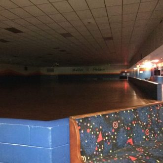 |
| 24 | SOS | SZA |

|
| 23 | Wet Leg | Wet Leg | |
| 22 | Arrangements | Preoccupations | 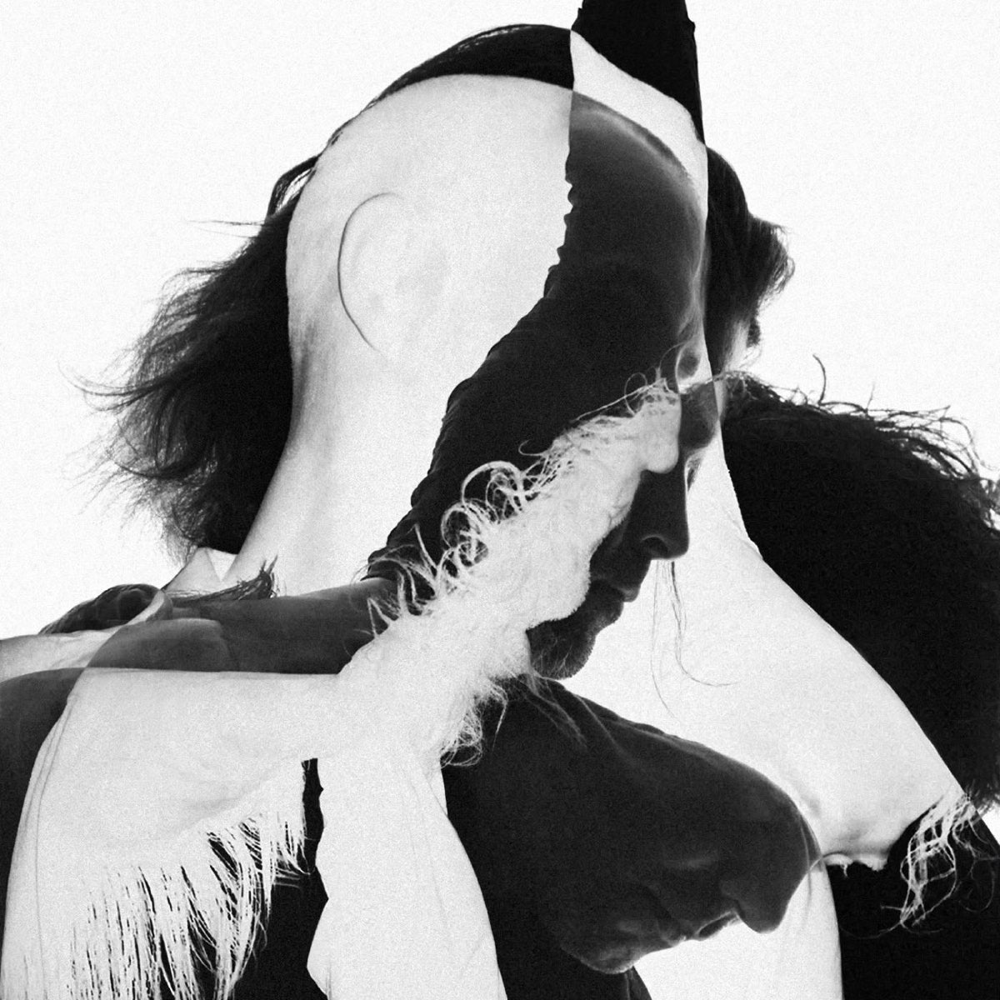 |
| 21 | Heavy Pendulum | Cave In | 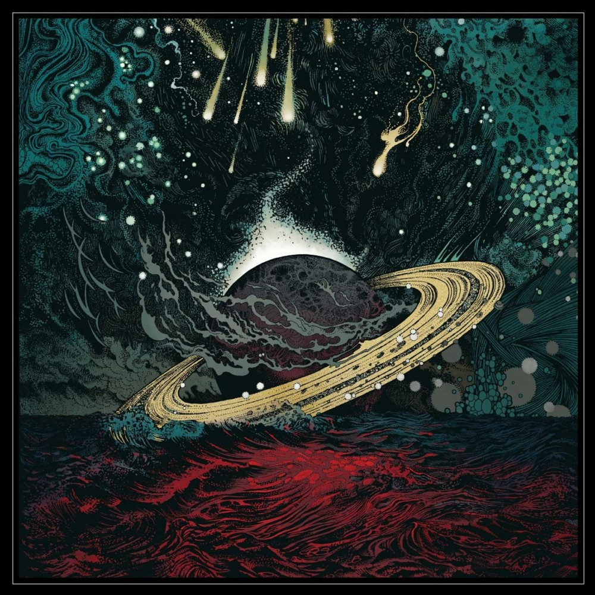 |
| 20 | God Save the Animals | Alex G | 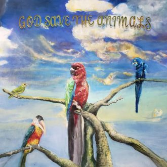 |
| 19 | Famously Alive | Guerilla Toss | 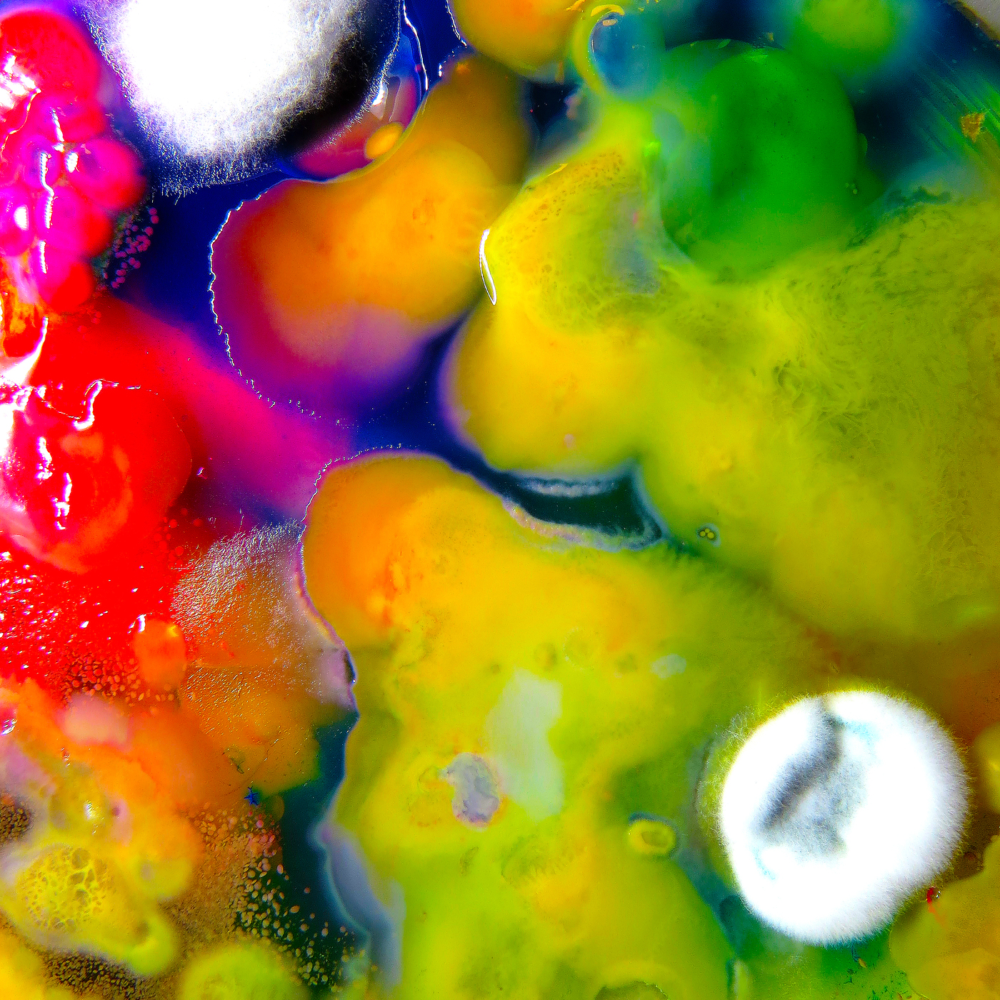 |
| 18 | Knifeplay | Knifeplay | 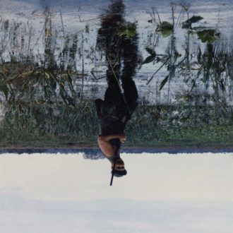 |
| 17 | Household Name | Momma |

|
| 16 | Present Tense | Yumi Zouma |

|
| 15 | Fossora | Björk | 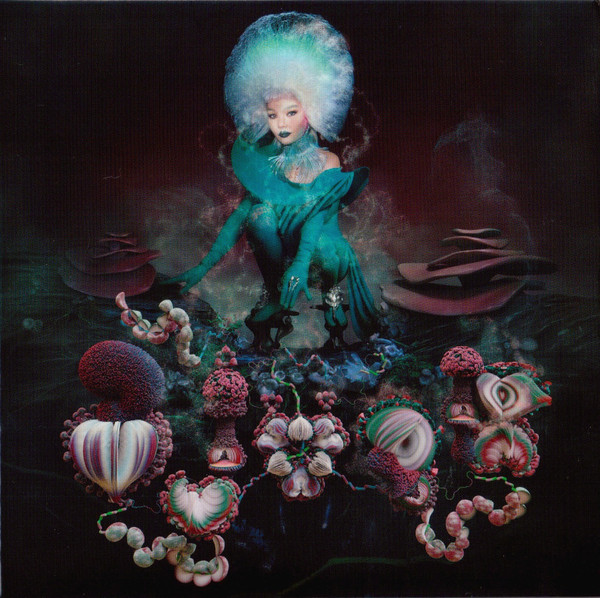 |
| 14 | Sometimes, Forever | Soccer Mommy | 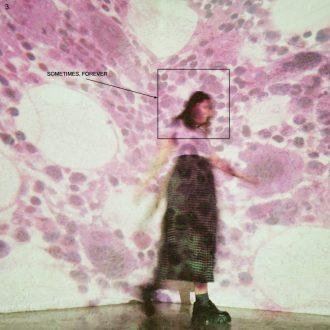 |
| 13 | Laurel Hell | Mitski | 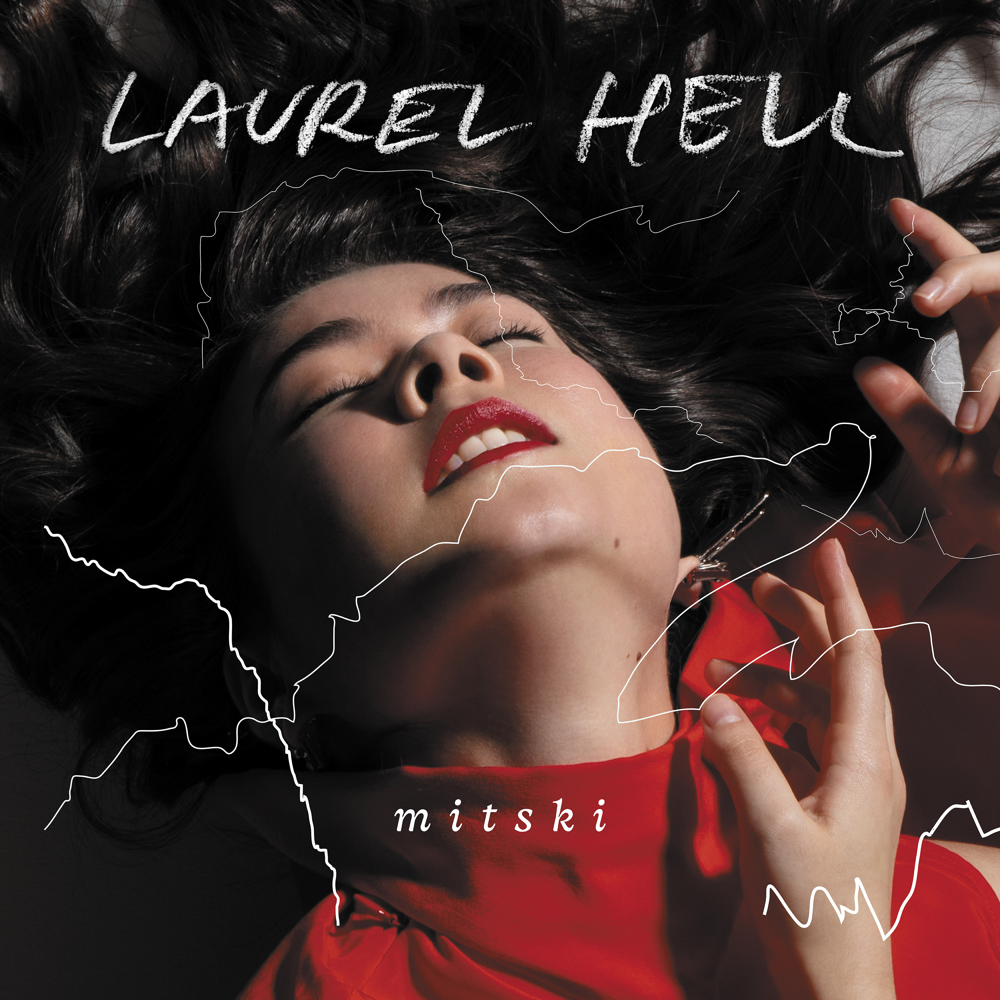 |
| 12 | God’s Country | Chat Pile | 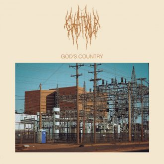 |
| 11 | Pool Kids | Pool Kids | 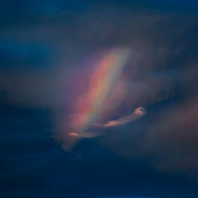 |
| And now, for the top 10 albums, who are deserving of opinions. |
10. The Beths - Expert in a Dying Field

Fish album fish album fish album. What sets this album apart from previous offerings from The Beths is a cohesion in the album, one of my favorite traits. The guitars drive and weave to create a distortive soundscape, while Elizabeth’s clear vocals lament love and ponder the albums big question throughout the 12 songs.
9. Nilüfer Yanya - PAINLESS

Nilüfer Yanya’s first full-length since the more conceptual Miss Universe, PAINLESS deals more in breakneck beats, soft vocals, and stripped-back instrumentals to concise effect.
8. Beach House - Once Twice Melody

I’ll take this moment to acknowledge a glaring omission, Big Thief’s 2022 release did not make my list. This is because Once Twice Melody is simply the better indie double album that came out in February by celebrated mainstays of the genre. They are both separate and great, and basically occupy the same space in my mind.
But Beach House is a little better so it gets to be on the website.
7. Let’s Eat Grandma - Two Ribbons

The single “Happy New Year” came out on, unsurprisingly, January 1st, 2022. I firmly recall thinking Let’s Eat Grandma would be knocking it out of the park with the full release. The album is tender, it’s fun, and it’s a little weird. It contains a dose of optimism many of us sorely need, “I still believe that I haven’t met the best days of my life.”
6. Angel Olsen - Big Time

Angel can do no wrong, with Big Time joining her pantheon of albums that expertly navigate the influence of folk and country music in times when those feelings and genres feels so far away. She even brings out tracks like “Go Home” that feel comfortable next to huge ballads like “Lark.”
5. Anxious - Little Green House

These dudes are from like two towns over from where I grew up, and there are few words to express how exciting it is to have something other than income inequality coming out of Connecticut. The world could always use more kick-ass emo songs to sing along to, and Anxious deliver in an unparalleled way this year. Also I listen to a lot of emo you should take my word for it.
Gr8est band outta CT since TWIABP&IANLATD.
4. Soul Glo - Diaspora Problems

The first song on this album starts with some ripping a bong to the tune of the 20th Century Fox intro. The rest of the album gets better from there, impossibly?? “Who gon beat my ass?” is a refrain I think to myself often. This miasma of punk, hardcore, and rap shreds the whole way through and will make you reconsider your whole deal.
3. Black Country, New Road - Ants From Up There

BC,NR are the ultimate alchemists when it comes to distilling the chaos of modern existence into a concoction of post-rock, punk, and experimental musings. No other band could pull off a love song to the retired passenger plane Concorde (it’s maybe not actually about the plane, but subtext is for losers). Like any fantastic post-rock album, these themes are pulled through the rest of the album and culminated expertly in “Basketball Shoes.” Which is also longer than 10 minutes, like any good post-rock song. I am bereaved that volcalist Isaac Wood is leaving the band, but I treasure his personality that shines through on this album.
2. Alvvays - Blue Rev

This is actually a shoegaze record and it slaps wicked hard.
1. And So I Watch You From Afar - Jettison

ASIWYFA are always telling stories. Stories told through mind-melting guitar licks and riffs, and now they have contrasted them with string quartets and spoken word. The guitars are still there, and if you like distortion than this is the album for you. But it is not in your face, it is polite, the motifs introduce themselves calmly and say “hello, would you like to listen to me for a bit?” There are 9 songs, and each brings in more layers. Many artists introduce these layers in an effort to form cacophony, to create distortion that tears the listener away from reality and into the piece. Jettison, however, is building a story with its layers. One guitar riff may discuss a B-plot, another may introduce a new character, and it all hinges on the rawness of the spoken word to bring it back to center. Expert craftsmanship beyond just music-making for 40 minutes, and unparalleled in this year.
There is no time for honorable mentions, but if I didn’t put down an album you really liked, consider it my top honorable mention.
If you haven’t yet, please enjoy my list on this year’s songs or my silly little superlatives.